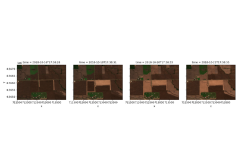
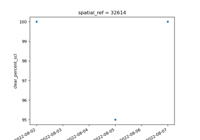
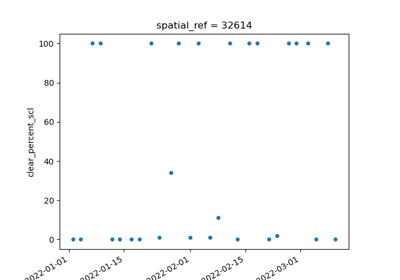
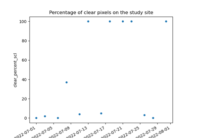
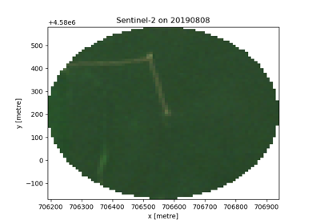

Gallery
Here you will find all the examples related to earthdaily library.

Venus datacube


Field evolution and zonal stats
Field evolution and zonal stats

Compare Sentinel-2 scale/offset evolution during time
Compare Sentinel-2 scale/offset evolution during time

First steps to create a datacube
First steps to create a datacube

Create a multisensor cube